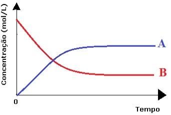
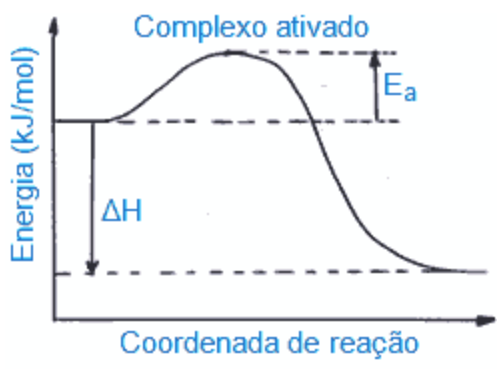
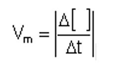

Cinética química é o ramo da química que estuda a velocidade das reações e os fatores que a influenciam. A medida que o tempo vai passando da reação química, os produtos vão aumentando sua quantidade, seja em mol, massa ou então em volume. E os reagentes vão diminuindo.
Observe o gráfico onde A são os produtos que vão aumento com o passar do tempo e B são os reagentes que vão diminuindo com o passar do tempo, sendo assim, uma reação química só acaba quando todos os reagentes químicos forem totalmente consumidos.
Fatores que alteram a velocidade de uma reação:
• Concentração: Quanto maior a concentração dos reagentes, maior a velocidade da reação.
• Energia de ativação: Quanto maior a energia de ativação, mais lenta será a reação. A energia de ativação é explicada pela teoria da colisão: a reação química é constituída por colisões entre as moléculas dos reagentes. Nem toda colisão, porém, é eficaz, pois é necessário que haja energia suficiente e geometria molecular adequada. A energia de ativação é aquela requerida para que as colisões sejam eficazes, ou seja, resultem no complexo ativado.
• Temperatura: Quanto mais elevada a temperatura, mais rápida a reação.
• Superfície de contato: Para o caso de reagentes em diferentes fases, quanto maior a superfície de contato do reagente sólido, mais rápida será a reação.
• Pressão: No caso das reações que envolvam reagentes gasosos, quanto maior a pressão, mais rápida será a reação.
Catálise é uma reação na qual existe uma substância capaz de acelerar a reação, um catalisador, mas que não toma parte da reação propriamente dita, permanecendo inalterada sua massa e suas propriedades após a reação.
Como se calcula a velocidade média de uma reação?
A formula utilizada para calcular a velocidade média de uma reação é:
Onde:
Vm = Velocidade média (mol/L/s)
Δ[] = Variação de concentração (mol/L)
Δt = Variação de tempo (s, min)
| | = Módulo
Como calcular a velocidade de uma reação?
Utilizamos a lei da velocidade dada por:
Para a reação genérica A + B → produtos, temos:
V=k.[A]m.[B]n
Onde k depende da reação e da temperatura, e os valores de m e n , são determinados experimentalmente. Quanto maior for a temperatura, maior será o valor da constante de velocidade (k) para uma reação química.
V = velocidade da reação;
k = constante de velocidade - depende da reação e da temperatura;
[X] e [Y] = concentração molar dos reagentes envolvidos na reação;
m e n = números determinados de dados experimentais da reação;
m + n = ordem global da reação.
Mecanismos das reações
É o conjunto de etapas em que ocorre uma reação, sendo a velocidade da reação determinada pela etapa mais lenta.
Reação elementar
Em química, uma reação elementar é aquela que se produz em uma só etapa, sendo facilmente adaptada para a lei da velocidade.
Reação não elementar
Em química, uma reação não elementar é aquela que ocorre em duas ou mais etapas. Para calcularmos a lei da velocidade de uma reação não elementar desconsideramos todas as etapas, com exceção da etapa lenta.